▲ 대성동고분박물관 건물과 뒤편 경전철 고가. 위키미디어 커먼즈 기재 촬영일은 2024년 10월 1일이다. 사진=xiquinhosilva, 위키미디어 커먼즈 CC BY 4.0
"가야 유적, 하루에 다 걸어서 돌 수 있을까?" 2026년 10월 13일(화요일) 기준으로 김해시가 공식 안내하는 도보 코스 '가야사누리길'은 약 5km, 2시간이다. 이 길에 들어가는 국립김해박물관과 대성동고분박물관은 입장료가 무료이고, 두 곳 모두 월요일에 쉰다. 같은 날 가야테마파크(성인 입장권 7,000원)도 월요일은 쉬는데, 무료 셔틀이 월·화요일에는 다니지 않아 오늘 같은 화요일에 경전철로 가려면 셔틀 없이 움직여야 한다. 김해시 누리집, 대성동고분박물관·국립김해박물관·가야테마파크 공식 누리집, 한국관광공사 TourAPI를 2026년 10월 13일에 직접 열어 확인한 값만 정리했고, 확인하지 못한 항목은 그대로 "확인하지 못했다"고 적었다. 김해 분청도자기축제는 연기 소식이 있어 이 글에서 다루지 않는다.
💡 먼저 결론
가야 유적 걷기는 월요일을 피하고, 박물관 두 곳이 문을 닫는 평일 18시 전에 끝내는 동선이 핵심이다. 대성동고분박물관은 09:00~18:00(입장 마감 17:30), 국립김해박물관은 평일 09:00~18:00이며 4~10월 토요일은 21시까지 연다. 올해 가야문화축제는 4월 30일~5월 3일에 이미 끝났다. 가을에 열리는 공식 일정으로는 가야테마파크 달빛왕궁음악회(10월 24일 19:00)와 야간개장(11월 15일까지)을 확인했다. 단풍 절정 시기 자체는 이 글에서 따로 예측하지 않았다. 가야테마파크 운영·운휴 바로가기
1. 한눈에 보기 — 확인한 것과 확인하지 못한 것
김해의 가야 유적은 해반천과 경전철 박물관역~봉황역 일대에 모여 있다. 공식 자료로 확인한 운영 정보를 먼저 표로 묶었다. 이 글의 입장료·시간은 2026년 10월 13일 열어 본 공식 누리집과 TourAPI(수정일 병기)가 근거다.
| 시설 | 운영시간 | 휴관 | 입장료 | 주차 |
|---|---|---|---|---|
| 대성동고분박물관 | 09:00~18:00(입장 마감 17:30) | 매주 월요일·1월 1일·설·추석 당일(월요일이 공휴일이면 공휴일 다음 첫 평일) | 무료 | 무료(TourAPI 수정 2026-07-22) |
| 국립김해박물관 | 평일 09:00~18:00, 주말·공휴일 ~19:00, 4~10월 매주 토요일 ~21:00(공식 누리집) | 매주 월요일·1월 1일·설·추석 당일 | 무료(특별전은 관람료가 생길 수 있음) | 확인하지 못했다 |
| 수로왕릉 | 3·10월 08:00~19:00, 4~9월 08:00~20:00, 11~2월 09:00~18:00 | 연중무휴 | 확인하지 못했다 | 가능(TourAPI 수정 2026-08-07) |
| 수로왕비릉 | 수로왕릉과 같은 계절별 시간 | 연중무휴 | 확인하지 못했다 | 가능(TourAPI 수정 2025-09-17) |
| 봉황동 유적 | 운영시간 기재 확인하지 못했다 | 연중무휴 | 확인하지 못했다 | 가능·무료(TourAPI 수정 2025-11-25) |
| 가야의 거리 | 상시 개방 | 연중무휴 | TourAPI에 입장료 항목 없음(확인하지 못했다) | 불가능(TourAPI 수정 2026-03-13) |
| 가야테마파크 | 화~일 09:30~18:00(매표 마감 17:00) | 매주 월요일(월요일이 공휴일이면 정상 운영) | 성인 7,000원(입장권) | 약 700대 |
국립김해박물관은 시간 값이 두 곳에서 어긋난다. TourAPI(수정 2026-07-07)에는 "09:00~18:00(입장 마감 17:30)"이라고만 적혀 있고, 박물관 공식 누리집 첫 화면에는 오늘(2026-10-13)을 "개관일"로 표시하면서 평일 09:00~18:00, 주말·공휴일 ~19:00, 4~10월 토요일 ~21:00으로 적혀 있다. 공식 누리집이 더 직접적인 근거라 그 값을 우선했지만, 입장 마감 시각은 공식 누리집에서 별도로 확인하지 못했다. 수로왕릉·봉황동 유적·가야의 거리는 입장료 항목이 TourAPI에 비어 있어 요금을 단정하지 않았다.
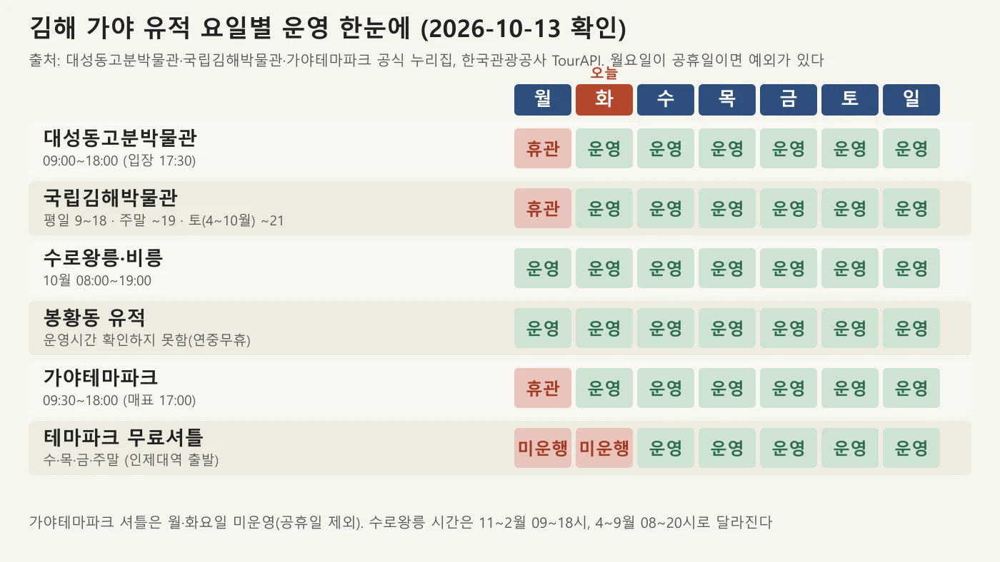
▲ 김해 가야 유적 요일별 운영·휴관 도표(2026-10-13 확인값을 카프리즘이 정리). 사진=카프리즘 제작 도표
2. 대성동고분박물관·대성동고분군 — 금관가야 왕들의 무덤
TourAPI에 실린 소개에 따르면 대성동고분박물관은 2003년 개관했고, 금관가야 최고 지배층 무덤 유적인 대성동고분군(국가사적 제341호)에서 나온 유물을 전시한다. 주 전시관, 대형 무덤 2기를 발굴 당시 모습으로 야외에 전시한 노출전시관, 기획전시관으로 구성된다. 상설 전시 주제는 "왕들의 마지막 안식처", "수로왕 이전의 사회", "왕의 무덤, 모습을 드러내다", "금관가야의 남겨진 이야기"이고, 야외 전시는 대성동고분군에서 첫 왕묘라 할 수 있는 29호 목곽묘와 이를 파괴하고 들어선 39호 목곽묘를 발굴 당시 상태로 복원했다.
박물관 누리집 첫 화면에는 2026년 10월 4일자 "10월 5일 개천절 대체공휴일 지정에 따른 대성동고분박물관 개관 안내"가 올라 있다(제목만 확인, 본문은 열어 보지 못했다). 누리집의 10~11월 교육 일정에는 유아 대상 "반짝반짝 대성동고분군 매직거울만들기"가 있고 신청 기간이 2026년 10월 6일~15일이라고 되어 있다. 이 글에서는 제목과 신청 기간 외의 세부 조건은 확인하지 못했다.
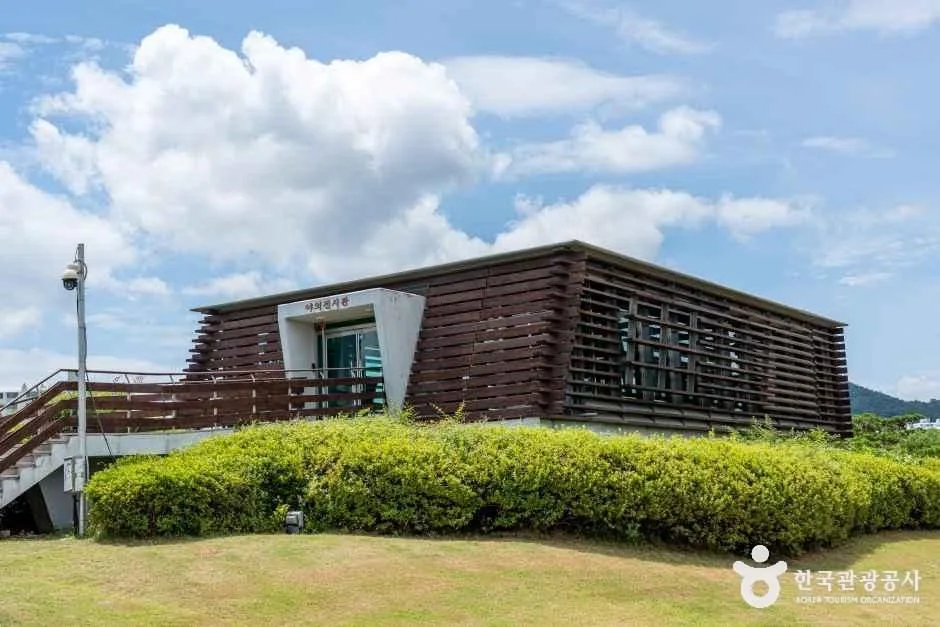
▲ 대성동고분박물관 외관(TourAPI 제목 '외부_02'). 촬영 시기는 확인하지 못했고 잎이 푸른 모습이어서 가을 사진은 아니다. 사진=한국관광공사
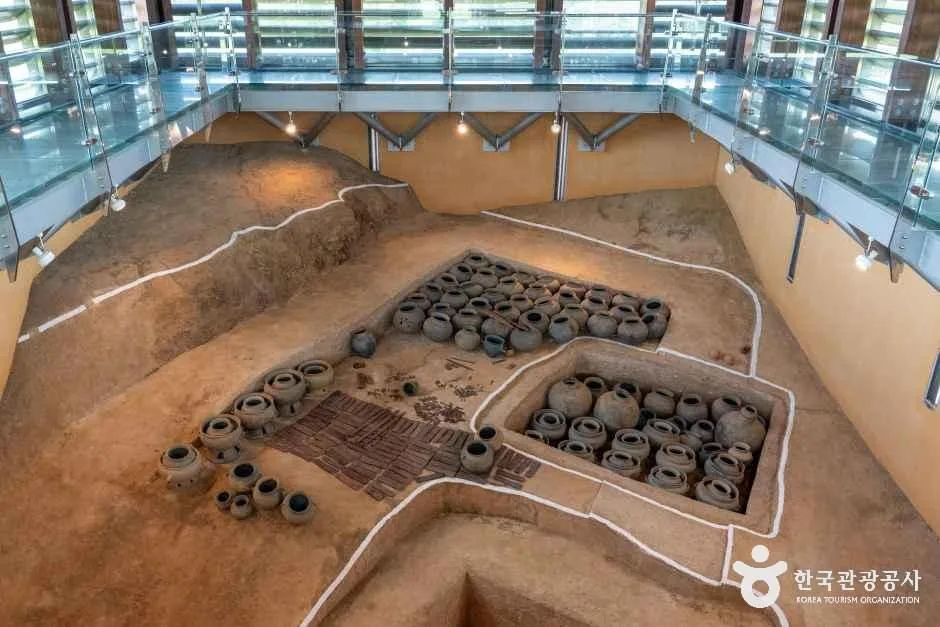
▲ 대성동고분박물관 내부 전시관의 발굴 무덤 전시 모습(TourAPI 제목 '내부_06'). 사진=한국관광공사
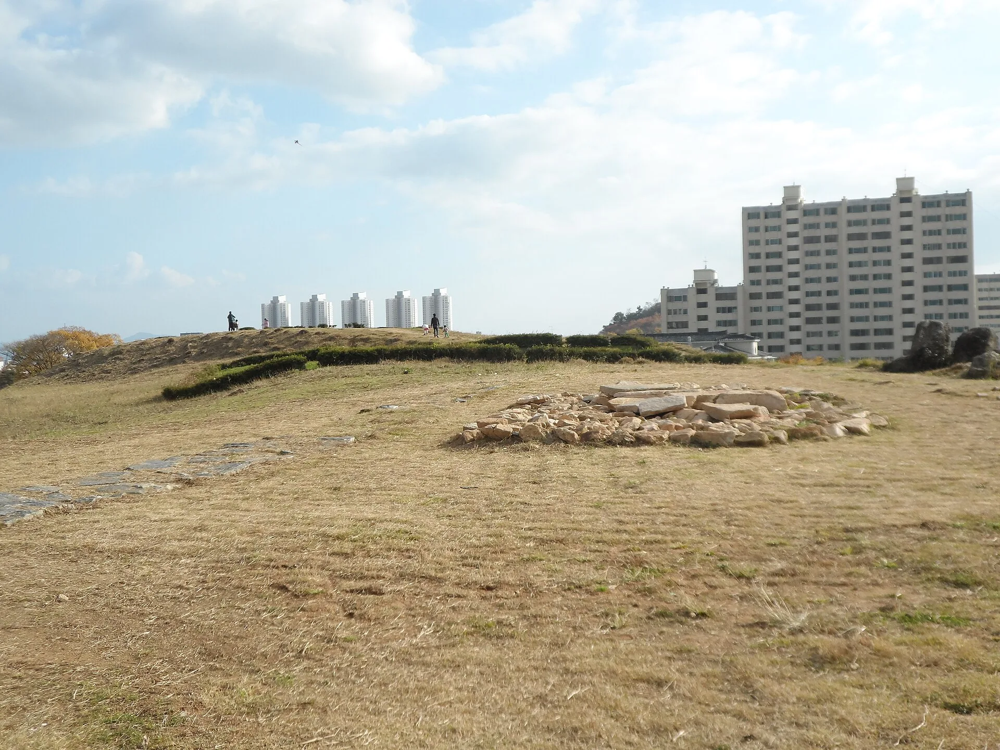
▲ 대성동고분군 능선에서 본 고분과 뒤편 아파트 단지. 풀이 마른 모습이며 위키미디어 커먼즈 기재 촬영일은 2015년 11월 15일이다. 사진=Donggeon, 위키미디어 커먼즈 CC BY-SA 4.0
대성동고분군이 가야고분군의 일부로 세계유산에 올라 있다는 사실은 박물관 누리집의 '세계유산등재' 메뉴와 올해 8월 28일자 "2026 가야고분군 세계유산 축전 기간 박물관 운영 알림" 공지 제목으로도 확인된다. 다만 축전의 구체 일정은 이 글에서 확인하지 못했다.
3. 봉황동 유적 — 조개무덤과 고상가옥을 걷는 언덕
김해시 사적 안내에 따르면 봉황동 유적은 1963년 1월 21일 지정됐고, 높이 7m·동서 길이 약 130m·남북 너비 약 30m의 낮은 언덕 위에 조성돼 있다. 가야시대 주거지·고상가옥·망루·선박을 복원해 생활상을 볼 수 있다. 1907년 처음 알려졌고 1920년 본격 발굴에서 중국 신나라 화폐 화천 1개와 탄화미가 나왔다고 안내한다. TourAPI 소개에는 금관가야 기마무사상, 고상가옥(창고), 가야의 배, 망루, 황세바위, 여의각, 가야주거군, 패총 전시관이 주요 시설로 나온다.
ℹ️ '봉황토성'과 '가야의 숲'은 확인하지 못했다
TourAPI 소개는 "봉황대 서쪽에는 가야시대 토성과 대규모 창고형 건물터가 발견"됐다고만 적는다. '봉황토성'이라는 이름의 별도 방문 안내(위치·개방 여부)나 '가야의 숲'이라는 시설은 공식 자료에서 찾지 못해 따로 소개하지 않았다. 봉황동 유적의 개방 시간·입장료도 확인하지 못했다. 주소는 TourAPI가 '가락로63번길 50', 김해시 사적 안내가 '가락로63번길 51'로 달라 지도 앱에서 '봉황동 유적'으로 검색하는 편이 낫다.
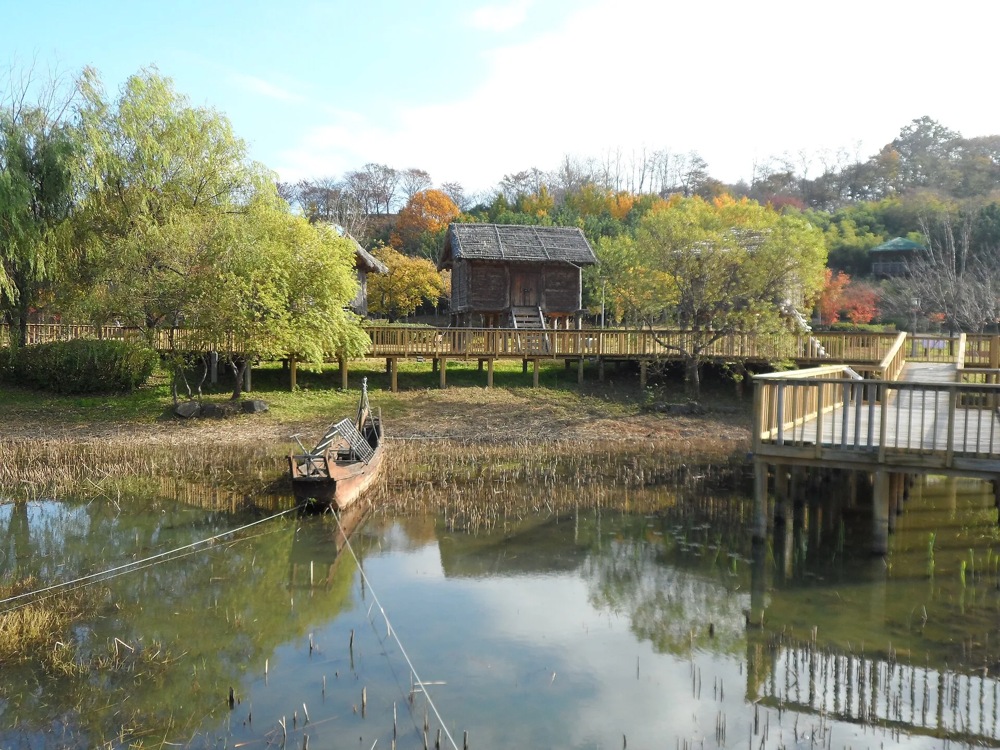
▲ 봉황동 유적의 연못과 복원 시설. 연못에 복원 선박이 놓여 있고 뒤로 고상가옥이 보이며 나뭇잎이 단풍 든 모습이다(위키미디어 커먼즈 기재 촬영일 2015년 11월 15일). 사진=Donggeon, 위키미디어 커먼즈 CC BY-SA 4.0
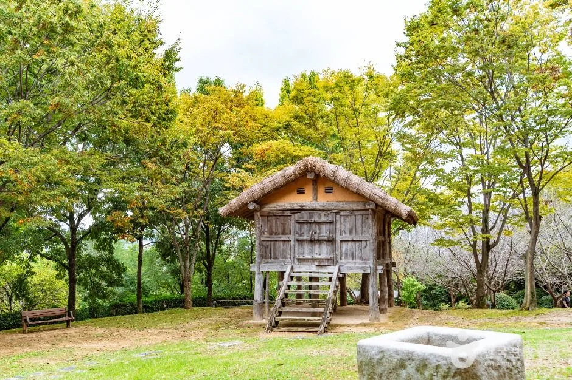
▲ 봉황동 유적에 복원된 고상가옥(창고)과 움집 형태의 건물. 촬영 시기는 확인하지 못했다. 사진=한국관광공사
4. 국립김해박물관 — 철의 왕국을 상징한 검은 벽돌 건물
TourAPI 소개에 따르면 국립김해박물관은 1998년 7월 29일 개관한 고고학 중심 박물관으로, 가야 건국설화가 깃든 구지봉 기슭에 있다. 건물 전체를 검은 벽돌로 마감해 철광석과 숯의 이미지로 "철의 왕국 가야"를 표현했다고 한다. 전시Ⅰ실은 울산 검단리 마을 유적과 창원 다호리 1호 무덤 모형, 선사시대와 변한, 전기 가야를 대표하는 금관가야 유물을 다루고, 전시Ⅱ실은 지역별로 형성된 가야 문화의 독창성과 변화를 보여 주는 유물을 전시한다.
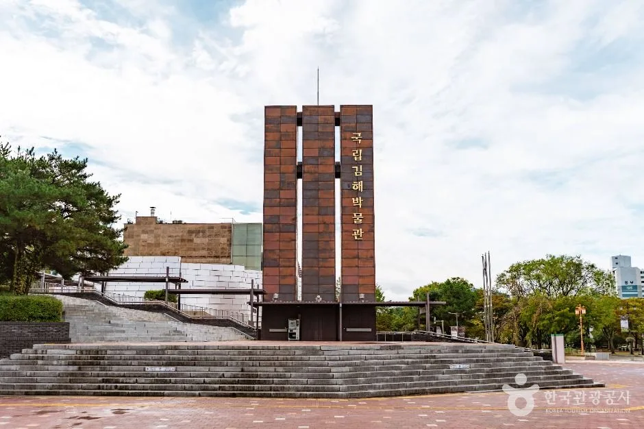
▲ 국립김해박물관 외관. 촬영 시기는 확인하지 못했고 잎이 푸른 모습이어서 가을 사진은 아니다. 사진=한국관광공사
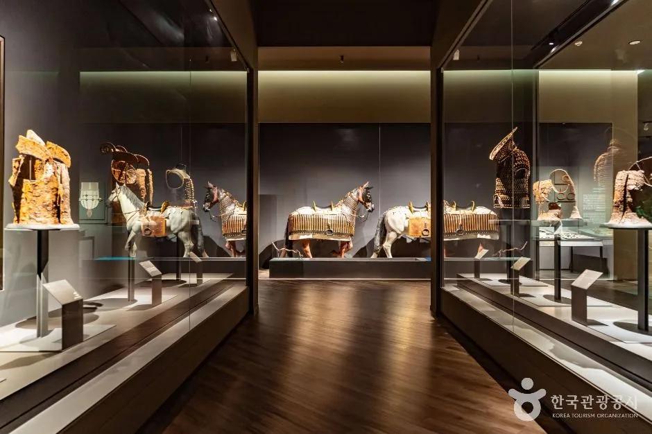
▲ 국립김해박물관 상설전시실의 말 모양 유물 전시 모습. 사진=한국관광공사
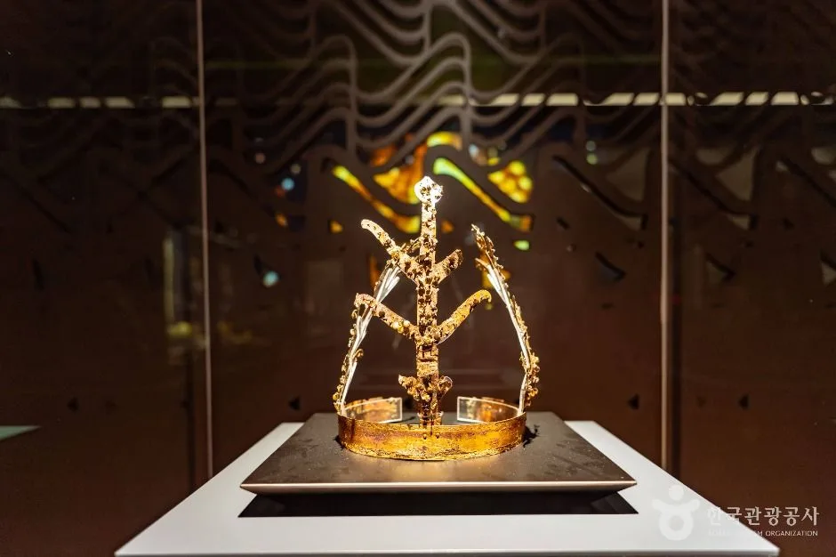
▲ 국립김해박물관 전시 유물(TourAPI 제공 사진, 유물 명칭은 사진 설명에 없어 확인하지 못했다). 사진=한국관광공사
공식 누리집에는 두 가지 알림이 올라 있다. 하나는 "제9회 국립김해박물관 가야 웹툰 공모전" 2026년 7월 13일~10월 18일이고, 다른 하나는 문화가 있는 날 프로그램 "박물관에 가면 필라테스도 하고"(9.9 / 9.16 / 10.14 / 10.21, 상설전시실 1층 중앙홀, 성인·어르신 대상)다. 두 행사 모두 공지 제목 수준만 확인했고 신청 방법은 열어 보지 못했다.
5. 수로왕릉·수로왕비릉 — 연중무휴 사적
TourAPI 소개에 따르면 수로왕릉은 서기 42년 가락국 시조로 왕위에 오른 수로왕의 무덤으로, 높이 약 5m의 원형봉토분이다. 숭선전, 안향각, 전사청, 제기고 같은 건물과 신도비·공적비 같은 석조물이 있고, 능 앞 묘비는 1647년(인조 25), 숭선전 이름은 1884년(고종 21)에 내려졌다고 안내한다. 수로왕릉은 연중무휴, 하루 5,000명 수용, 3·10월 08:00~19:00(TourAPI 수정 2026-08-07)이라 10월 방문은 19시까지다.
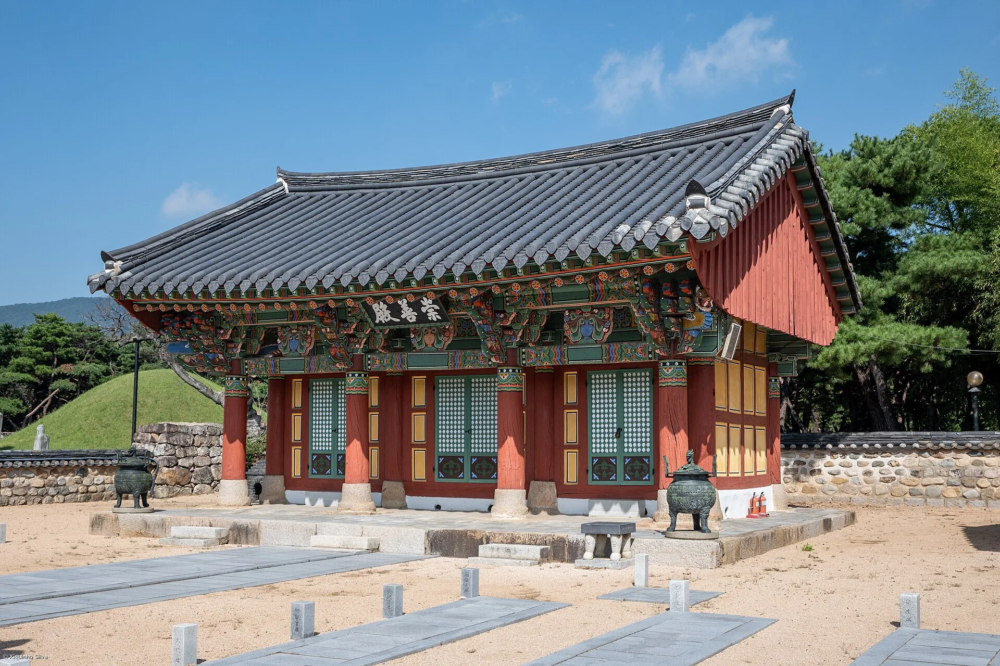
▲ 수로왕릉 경내의 전각과 뒤편 봉분. 위키미디어 커먼즈 기재 촬영일은 2024년 10월 1일이다. 사진=xiquinhosilva, 위키미디어 커먼즈 CC BY 4.0
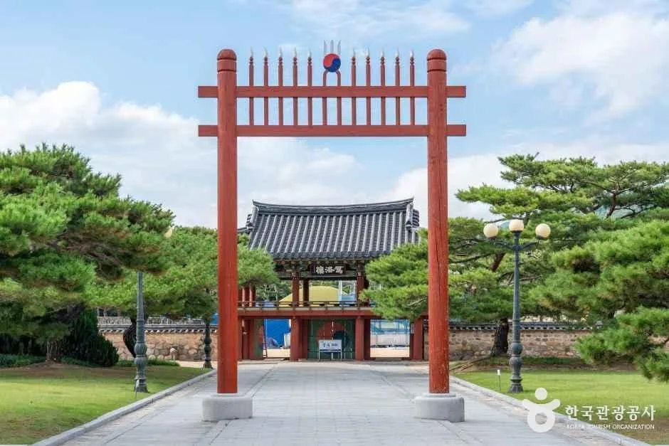
▲ 수로왕릉 앞에 선 홍살문과 그 뒤의 문(TourAPI 제목 '외부_01'). 사진=한국관광공사
수로왕비릉(허황옥의 무덤, 국가사적 제74호라고 김해시 사적 안내가 밝힌다)은 TourAPI 기준 같은 계절별 시간에 연중무휴로 열려 있고, 평지가 아닌 언덕에 있다는 점이 수로왕릉과 다르다. 왕비릉 앞에는 인도에서 가져왔다고 전하는 파사석탑의 석재가 남아 있다. 김해시 구지봉 안내는 구지봉을 서기 42년 수로왕이 탄강한 곳이라 소개한다.
6. 가야테마파크 — 요금·운영·휴장일
가야테마파크 공식 누리집은 오늘(10월 13일) "오늘의 운휴시설: 모든 시설이 정상 운영중"이라고 표시한다. 파크 운영시간은 화~일 09:30~18:00(매표 마감 17:00), 정기 휴장은 매주 월요일이며 월요일이 공휴일이면 정상 운영한다. 운영 시간표의 세부 항목은 다음과 같다.
| 시설 | 요일 | 시간 | 매표 마감 |
|---|---|---|---|
| 파크 | 화~일 | 09:30~18:00 | 17:00 |
| 가야무사 어드벤처·가야왕궁 전시관 | 화~일 | 10:00~18:00 | 17:00 |
| 페인터즈 가야왕국(공연) | 화~일 | 14:00 / 16:30(인원 미달 시 공연 취소) | 공연 전 |
| 전사체험장 | 화~일 | 10:30~18:00 | 17:00 |
| 도자체험장 | 화·수·금, 주말·공휴일 | 11:00~18:00 | 17:00 |
| 창의체험장 | 주말·공휴일(평일은 단체만) | 11:00~18:00 | 17:00 |
| 메가 익스트림(평일) | 화~금 | 사이클·플라잉 10~11, 13~14, 15~16, 17~18시 / 타워·드래곤네트 11~12, 14~15, 16~18시 | 17:00 |
| 구분 | 성인 | 청소년 | 어린이·경로 |
|---|---|---|---|
| 입장권(단일) | 7,000 | 6,000 | 5,000 |
| 입장+가야무사 어드벤처(패키지) | 9,000 | (성인·청소년·어린이 동일) | 김해시민은 가야무사 무료 |
| 입장+도자체험 1종(패키지) | 16,000 | (동일) | 김해시민 15,000 |
| 입장+페인터즈 가야왕국(패키지) | 26,000 | (동일) | 김해시민 23,000 |
| 입장+익사이팅 빅3(타워·사이클·플라잉 중 3종) | 56,000 | (동일) | 김해시민 52,000 |
| 페인터즈 가야왕국 상설공연(단일) | 22,000 | ||
| 가야무사 어드벤처(단일) | 7,000 |
공식 안내는 "입장권만 구매 시 시설 이용료 별도", 김해시민 할인에는 신분증 지참, 20인 이상은 단체요금이라고 적는다. 구분 기준은 어린이 36개월 이상~13세 이하, 청소년 14~19세, 어른 20~64세, 경로 65세 이상이다. 이 요금표에는 수정일이 표시돼 있지 않다. 누리집 상단에는 "김해방문의 해 특별주간 할인 이벤트" 링크가 있는데 내용은 열어 보지 못했다.
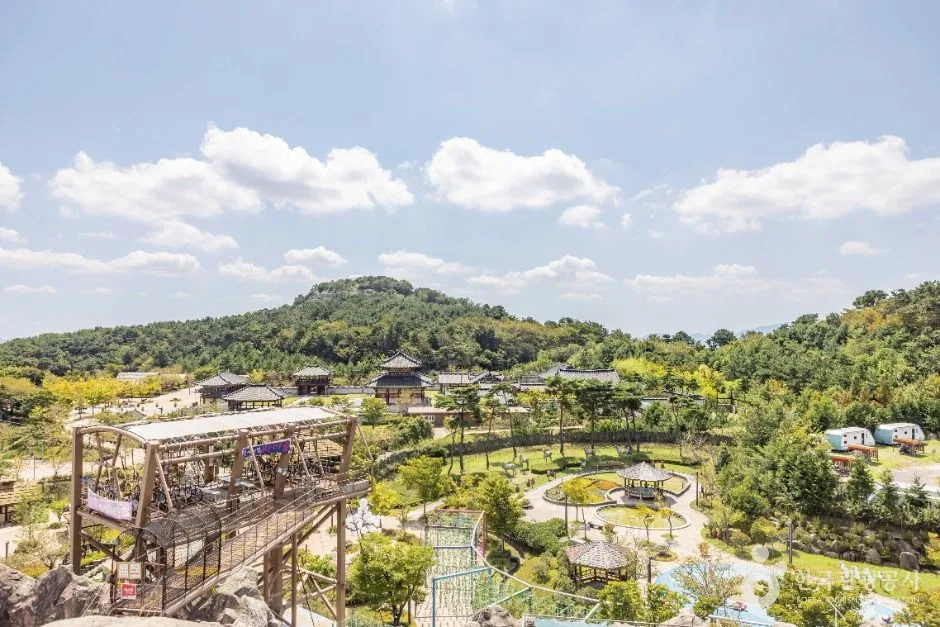
▲ 높은 곳에서 내려다본 김해가야테마파크 전경(TourAPI 제목 '(13)'). 촬영 시기는 확인하지 못했고 잎이 푸른 모습이어서 가을 사진은 아니다. 사진=한국관광공사
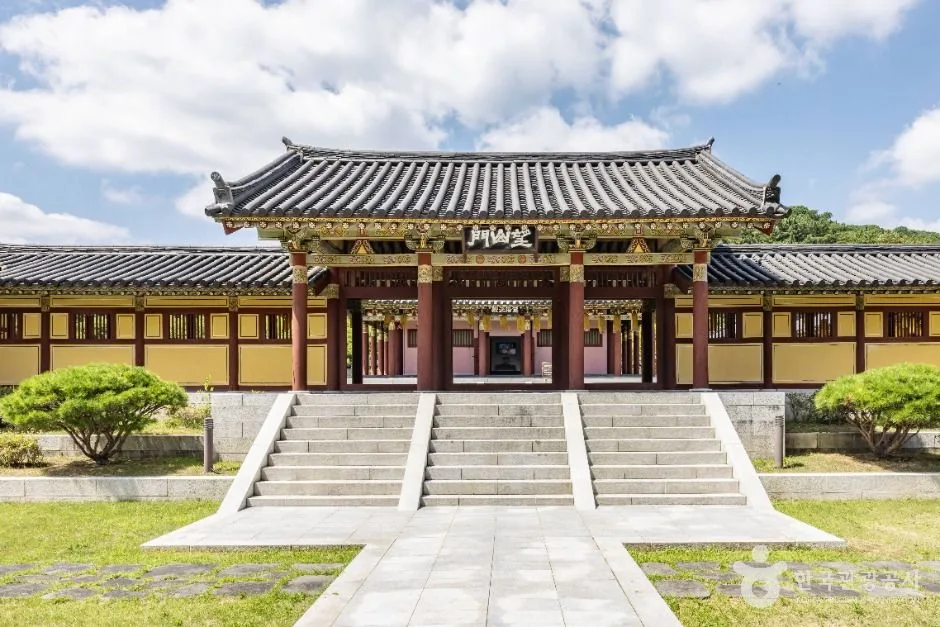
▲ 가야테마파크의 가야왕궁 일대 건물(TourAPI 제목 '(9)'). 촬영 시기는 확인하지 못했고 잎이 푸른 모습이어서 가을 사진은 아니다. 사진=한국관광공사
야간개장은 공식 공지에 따르면 2026년 4월 10일~11월 15일, 17:20~22:00(매표 마감 21:00), 입장료 4,000원이다. 공지문에는 "매주 금·토·일 / 공휴일 미운영"이라고 적혀 있어 공휴일이 금~일과 겹칠 때의 적용은 문장만으로 알 수 없다. 익사이팅 체험은 10월 10일(토)까지만 야간 운영이라서 지금은 야간 산책과 도자·활쏘기 체험 위주다. 공식 일정에서 확인한 올가을 행사는 아래 둘이다.
- 달빛왕궁음악회 시즌2 "명월, 왕후의 미소": 2026년 10월 24일(토) 19:00, 가야왕궁 태극전. 출연은 김해시립가야금연주단, 모듬타악 '소리바디', 최선희가야무용단(공식 블로그 게시 2026-10-12). 관람료·예약 방식은 확인하지 못했다.
- 특별전시 "나에게로 온 인도": 2025년 11월 25일~2026년 10월 17일, 뉴델리관(공식 이벤트 목록의 '진행중' 표시).
7. 올해 행사 — 가야문화축제는 이미 끝났다
서울신문(2026년 5월 4일)은 올해 가야문화축제가 4월 30일부터 5월 3일까지 나흘간 대성동고분군·수릉원·봉황동 유적지·가야의 거리 일원에서 열렸다고 전했다. 기사에 따르면 "유네스코 세계유산인 대성동고분군을 중심으로 공간을 재편하고 체류형·야간형 축제로의 전환을 본격화한 것이 특징"이었고, 개막 첫날 드론 1,000대 라이팅쇼와 해반천 야간 행사가 열렸다. 김해시는 4일 "성황리에 마무리됐다"고 밝혔다. 내년 축제 일정은 확인하지 못했다.
| 행사 | 일정 | 상태 | 근거 |
|---|---|---|---|
| 가야문화축제 | 4월 30일~5월 3일 | 종료 | 서울신문 2026-05-04 |
| 가야테마파크 야간개장 | 4월 10일~11월 15일 금·토·일 | 진행 중 | 가야테마파크 공식 공지 |
| 달빛왕궁음악회 시즌2 | 10월 24일(토) 19:00 | 예정 | 가야테마파크 공식 블로그·이벤트 목록 |
| 국립김해박물관 가야 웹툰 공모전 | 7월 13일~10월 18일 | 진행 중(공지 제목) | 국립김해박물관 누리집 |
| 김해 분청도자기축제 | 연기 소식이 있어 이 글에서는 제외 | — | — |
8. 걷기 코스 — 거리·소요시간을 어디까지 말할 수 있나
김해시가 공식 안내하는 도보 코스의 수치는 많지 않다. 아래 표는 확인한 수치만 담았고, 구간별 시간표는 만들지 않았다.
| 코스 | 구성 | 거리·시간 | 근거 |
|---|---|---|---|
| 가야의 거리 | 국립김해박물관에서 봉황대까지 이어지는 테마 거리 | 2.1km | TourAPI(수정 2026-03-13) |
| 가야사누리길 | 수로왕릉 → 대성동고분박물관 → 국립김해박물관 → 구지봉 → 수로왕비릉 → 김해읍성북문 → 수로왕릉 → 한옥체험관 → 봉황동 유적 → 김해자전거교육장 → 대성동고분박물관 | 수로왕릉역~수로왕릉역 약 5km, 2시간 | 김해관광포털 도보코스 |
| 가야도심 경전철 1박2일 코스 | 박물관역 → 국립김해박물관 → 구지봉 → 수로왕비릉 → 수로왕릉 → 수릉원 → 한옥체험관 → 글로벌푸드타운 → 회현동 벽화골목 → 봉황동 유적 → 봉황대길 → 봉황역 | 거리·시간 표기 없음(1박 2일) | 김해관광포털 도보코스 |
| 수로왕릉 → 대성동고분군 | 첫방문 코스 안내 | 도보 580m, 9분 | 김해관광포털 첫방문 코스(같은 페이지의 다른 구간 수치는 서로 맞지 않아 인용하지 않음) |
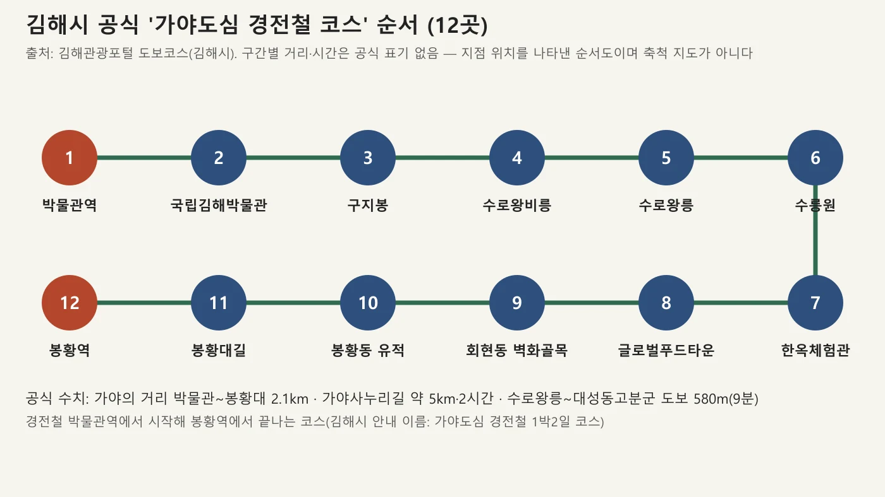
▲ 김해시 공식 '가야도심 경전철 코스' 12곳의 순서(축척 지도가 아님). 사진=카프리즘 제작 도표
'가야사누리길'은 이름처럼 걷기용으로 소개되며 김해시는 "해반천을 따라 걷다 보면 가야의 향기가 묻어나는 유적들을 만날 수 있고, 밤에는 야경이 빛나는 현대적인 길로 변신한다"는 취지로 적었다. 아래 하루 흐름은 카프리즘이 공식 운영시간만으로 짠 제안이며 구간 시간은 공식 값이 아니다.
| 순서 | 장소 | 근거가 되는 시간 제약 |
|---|---|---|
| 1 | 박물관역 → 국립김해박물관 → 구지봉 → 수로왕비릉 | 국립김해박물관 평일 18:00 폐관 |
| 2 | 수로왕릉(10월 19:00까지) | 연중무휴 |
| 3 | 대성동고분박물관 | 18:00 폐관(입장 마감 17:30)이라 박물관 2곳을 먼저 배치 |
| 4 | 봉황동 유적·가야의 거리(봉황역 방향) | 연중무휴, 상시 개방 |
| 5 | (선택) 가야테마파크 | 화~일 18:00 폐장·매표 17:00, 셔틀은 수~일 |
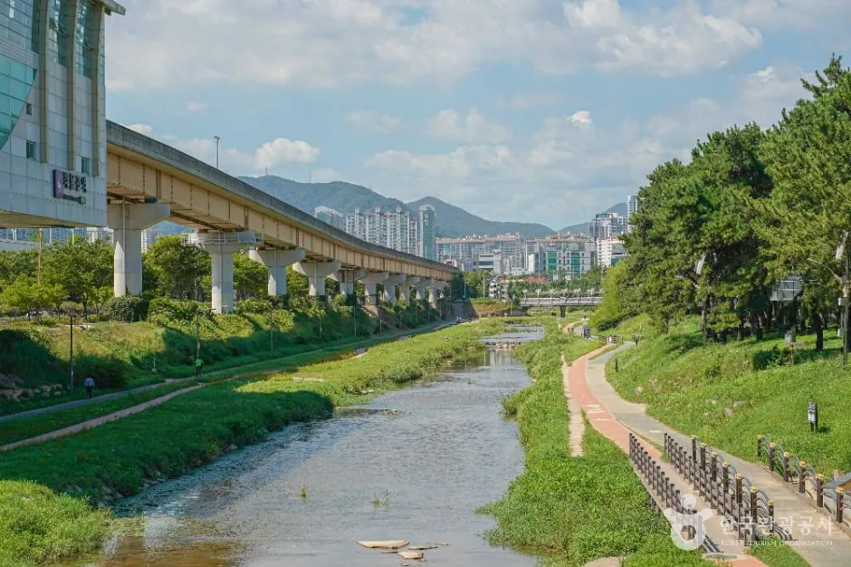
▲ 가야의 거리 인근 하천과 경전철 고가(TourAPI 제목 '가야의 거리 (5)'). 촬영 시기는 확인하지 못했고 잎이 푸른 모습이어서 가을 사진은 아니다. 사진=한국관광공사
9. 접근 — 김해경전철·버스·주차
김해시 코스 안내는 박물관역을 "국립김해박물관, 수로왕비릉, 대성동고분, 구지봉과 가까이 있는 역"이라 설명한다. 코스는 박물관역에서 시작해 봉황역에서 끝나므로 경전철 역 두 곳을 걷기의 양끝으로 삼을 수 있다. 박물관역·봉황역에서 각 시설까지의 정확한 도보 거리는 공식 자료에서 확인하지 못했다.
| 방법 | 내용 |
|---|---|
| 자가용 | 주차 약 700대. 동김해IC 출발 6km 약 18분, 삼량진IC 출발 21km 약 38분 |
| 경전철 | 인제대역 하차 후 무료 셔틀 또는 택시 |
| 버스 | 1번, 1-1번, 7번, 8번, 8-1번, 97번, 98번, 100번, 128-1번, 상공공영 1번·2번 |
| 셔틀 탑승 위치 | 경전철 인제대역 1번출구(상·하차 동일), 인제대 버스정류장(No.1166 하행·No.1175 다이소 앞 상행) |
| 구분 | 탑승 시각(같은 회차 테마파크 도착은 인제대역 탑승 25분 뒤) |
|---|---|
| 수·목·금 | 10:20 / 11:20 / 13:20 / 15:20 / 16:20 |
| 주말·공휴일 | 10:20 / 11:20 / 13:20 / 14:20 / 15:20 / 16:20 / 17:20 |
| 금·토·일 야간(9/4~11/15, 추석 제외) | 19:20 / 20:20 / 21:20 |
| 월·화 | 운행하지 않음(공휴일은 정상 운행) |
셔틀은 "김해가야테마파크 입장고객 전용"이고 도로 사정에 따라 약 5분 지연될 수 있으며 5인 이상은 별도 문의가 필요하다(055-340-7900). 인제대역 탑승 시각과 같은 회차의 테마파크 도착 시각(예: 10:20 탑승 → 10:45 도착)은 25분 차이다. 오늘 같은 화요일에는 셔틀이 없다.
🅿️ 주차는 이렇게 확인했다
대성동고분박물관은 TourAPI에 주차 무료로, 수로왕릉·수로왕비릉은 '가능'으로, 봉황동 유적은 '가능·무료'로 나온다. 국립김해박물관 주차 정보와 각 시설의 주차 면수는 공식 값이 없어 단정하지 않는다. 가야의 거리는 주차 불가라고 안내돼 있으니 걷기가 목적이라면 경전철이 편하다.
10. 함께 볼 기사와 문의처
- 단풍 시기를 가늠하려면 산림청 2026 단풍 절정 예측지도와 단풍 절정 예보 드라이브 가이드를 함께 보면 된다.
- 김해의 먹거리는 김해 뒷고기 기사에서 볼 수 있다(행사 일정은 해당 기사 기준).
| 시설 | 전화 |
|---|---|
| 대성동고분박물관 | 055-350-0401 |
| 국립김해박물관 | 055-320-6800(공식 누리집 하단), TourAPI에는 055-320-6825 |
| 수로왕릉관리사무소 | 055-332-1094 |
| 수로왕비릉 | 055-330-7313 |
| 봉황동 유적 | 055-330-3589 |
| 가야테마파크 | 055-340-7900~7901 |
| 가야의 거리(김해시 관광과) | 055-338-1330 |
11. 출발 전 체크리스트
- 요일: 월요일이면 대성동고분박물관·국립김해박물관·가야테마파크가 모두 쉰다. 월요일이 공휴일이면 예외가 있어 전화 확인.
- 시간: 박물관 두 곳은 평일 18시 폐관(국립김해박물관은 주말·공휴일 19시, 4~10월 토요일 21시), 대성동고분박물관·가야테마파크는 입장·매표 마감이 더 이르다.
- 셔틀: 가야테마파크 셔틀은 월·화요일에 없다.
- 확인 못 한 것: 수로왕릉·봉황동 유적 요금, 국립김해박물관 주차, 올가을 단풍 시기, 가야문화축제 내년 일정, 달빛왕궁음악회 관람료.
- 사진: 이 글의 TourAPI 사진 대부분은 촬영 시기를 알 수 없고 일부는 가을이 아니다.
✅ 핵심 체크
· 가야사누리길 약 5km·2시간(김해시), 가야의 거리 2.1km(TourAPI)
· 두 박물관 무료·월요일 휴관·18시 폐관(국립김해박물관 4~10월 토 21시)
· 가야테마파크 입장권 성인 7,000원·월요일 휴장·셔틀 월·화 미운행
· 가야문화축제 4/30~5/3 종료, 달빛왕궁음악회 10/24 19:00
12. 정리
김해 가야 유적 걷기는 월요일을 피하면 된다. 대성동고분박물관과 국립김해박물관은 무료이며 월요일 휴관·18시 폐관(국립김해박물관은 주말 19시, 4~10월 토요일 21시)이고, 수로왕릉은 연중무휴로 10월에는 19시까지 연다. 김해시는 가야사누리길을 약 5km·2시간으로 안내한다.
가야테마파크는 성인 입장권 7,000원이고 월요일 휴장이며 셔틀은 월·화에 없다. 가야문화축제는 이미 끝났고, 가을 일정은 10월 24일 달빛왕궁음악회와 11월 15일까지의 야간개장이다. 수로왕릉·봉황동 유적 요금과 구간별 도보 시간은 확인하지 못해 단정하지 않았다.